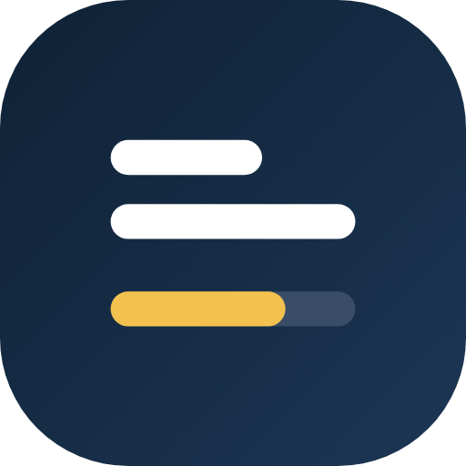
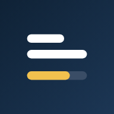

maskable 圖示在各種遮罩下（512 px 縮小顯示）
內容（三條線）最遠的角落離中心 169 px，是安全區半徑 204.8 px 的 83%；任何遮罩都不會切到線條。
一般圖示（purpose: any）

電腦版 Chrome／Edge 安裝後的視窗與工作列用這張（透明圓角，不加遮罩）。
主畫面與啟動畫面（示意）

EN Coach內容（三條線）最遠的角落離中心 169 px，是安全區半徑 204.8 px 的 83%；任何遮罩都不會切到線條。

電腦版 Chrome／Edge 安裝後的視窗與工作列用這張（透明圓角，不加遮罩）。

EN Coach